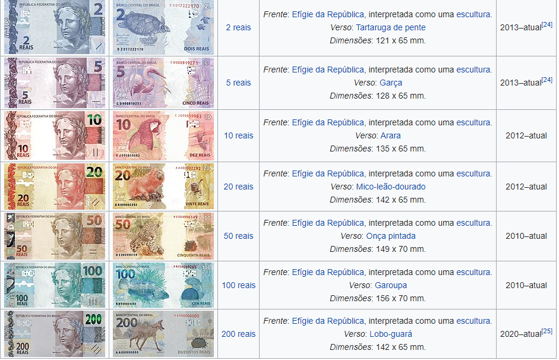
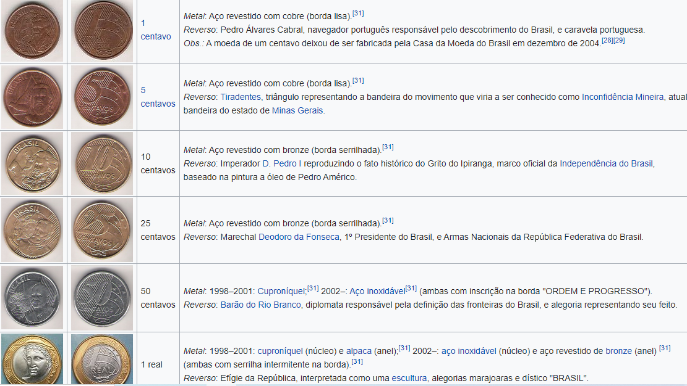

Real: Moeda brasileira
O Real (ISO 4217: BRL, abreviado como R$) é a moeda corrente oficial da República Federativa do Brasil. Após sucessivas trocas monetárias, o Brasil adotou o real em 1 de julho de 1994, que, aliado à drástica queda das taxas de inflação, constituiu uma moeda estável para o país. Foi implantado no mandato do presidente Itamar Franco, sob o comando do então ministro da Fazenda, Fernando Henrique Cardoso, depois eleito presidente da República. Quando o Real foi lançado, em 1 de julho, o ministro da Fazenda já era Rubens Ricupero, uma vez que FHC já tinha saído para desincompatibilizar-se e ter o direito de se candidatar a Presidente da República.
O real é a 16.ª moeda mais negociada no mundo, é a segunda mais negociada na América Latina e quarta mais negociada nas Américas. Estima-se que hoje existam mais de oito milhões de moedas perdidas do real.
O real é a moeda oficial brasileira, porém, o Banco Central do Brasil permite circulação de moedas privadas e moedas sociais no país, emitidas por bancos comunitários, desde que estas circulem apenas localmente e, sejam lastreadas pela moeda oficial. Portanto, para cada moeda privada/social emitida, o banco comunitário emissor deve possuir R$ 1,00 em caixa.
No dia 02 de setembro de 2020, entrou em circulação a nova cédula, no valor de R$ 200,00, a qual será a de maior valor em circulação. A justificativa para tal valor foi o chamado "entesouramento" de moedas feito pelas pessoas durante a pandemia de COVID-19, ou seja, menor circulação de cédulas.
História
Surgido de uma conjuntura de descontrole da inflação que gerava instabilidade econômica, pretendia-se uma moeda mais forte e merecedora de mais confiança do que suas predecessoras, filhas de outros planos econômicos que não vingaram. O nome escolhido, "real", coincide com o nome da primeira moeda do Brasil (plural: réis), moeda essa utilizada pelo império de Portugal em todas as suas colônias.
Diferentemente das moedas que haviam circulado anteriormente, o real não traz na sua nota personalidades da história nacional, mas sim animais da fauna brasileira. A explicação é a que famílias das pessoas homenageadas nas notas, como a de Mário de Andrade, já haviam reclamado das homenagens. Além disso, como a moeda precisava ser cunhada rapidamente, e não havia tempo hábil para negociar com as famílias, optou-se pela solução mais rápida: os animais. Diversas opções foram pensadas, tais como a piranha, o tucunaré, o lambari e o lobo-guará. Por fim, foram escolhidos o beija-flor, garça, arara, onça-pintada e a garoupa.
O Real fora concebido em três fases, a partir de meados de 1993: primeiro, um plano de ajuste fiscal, com o Plano de Ação Imediata (PAI) e, posteriormente, o Fundo Social de Emergência (FSE), que, além de desvincular obrigações da União para com os demais entes da Federação, previstas na Constituição de 1988, desejava, segundo as palavras do governo, criar um dispositivo que financiasse programas sociais (daí origina-se o nome do fundo); segundo, a criação da Unidade Real de Valor (URV), que tinha como papel servir apenas como unidade de conta, enquanto o Cruzeiro Real permanecia em circulação, como unidade de valor e meio de pagamento; e, por último, a partir de 1º de julho de 1994, entra em operação a moeda Real, que, finalmente, substituiria o Cruzeiro Real nas suas duas funções remanescentes.
A moeda foi criada pela Medida Provisória que instituiu o Plano Real, inicialmente em regime cambial fixo em relação a um conjunto de moedas liderado pelo dólar dos Estados Unidos. Isto significava que o real tinha um teto e um piso previamente definido para que o valor da moeda flutuasse. Caso a cotação chegasse ao teto, o Governo se comprometia a vender dólares e forçar queda de cotação. O inverso acontecia quando a cotação atingia o piso. Contudo, surpreendendo muitos, o real valorizou-se logo após ser lançado. Depois de um curto período de valorização no final de 1994 e início de 1995, quando real chegou a valer 1,20 USD (câmbio comercial, 31 de março de 1995), o controle do Banco Central resultou numa desvalorização gradual da moeda, de 1 R$ : 1 USD em 1995 para cerca de 1,2 : 1 no final de 1998.
Em janeiro de 1999, entretanto, a crise financeira decorrida da crise financeira asiática em 1997, da quebra da Rússia em 1998, e da crise financeira argentina, levou o Banco Central do Brasil a abandonar o modelo de câmbio semi fixo e a deixar o câmbio flutuar livremente. A súbita desvalorização do real no início de 1999, de 1,2 : 1 para quase 2,0 : 1 marcou o fim da absoluta previsibilidade do câmbio. Entre 1999 e 2003 o câmbio evoluiu de maneira irregular mas geralmente no sentido de desvalorização, atingindo a cotação mínima de 3,9 R$ : 1 USD no final de 2002. Em seguida a tendência geral se inverteu, e em 2006 o câmbio havia retornado ao patamar de 2,2 : 1. Desde essa época o câmbio tem flutuado ao redor de 2 reais para 1 dólar.
Notas
Moedas
Fonte: Wikipédia